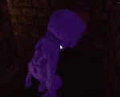
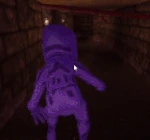

Ao Oni (Stylized as Aooni in Japanese) is the third monster added in Pillar Chase 2 after Rosemary. It is a species of man-eating, blueberry-colored giants who act as the main, titular threats found across the Ao Oni series, beginning as a freeware, horror RPG Maker game of the same name, created by noprops from 2008 to 2011. He[1] can be bought for 1250 Coins at the shop, (previously 1250 before the Vita Mimic update, then 1150 before the Fuwatti update, and then 1400 before the Black Friday update ended.).
|  WWhen pressing 1, Ao Oni will highlight all living players in red, briefly darkening the map. While using Oni vision, the player will quickly regain stamina and can freely run and attack. This ability lasts for 4 seconds, and a cooldown of 12 seconds begins once the effect ends. This ability is also shared with Fuwatti. |
 When pressing 2 Ao Oni can choose to |